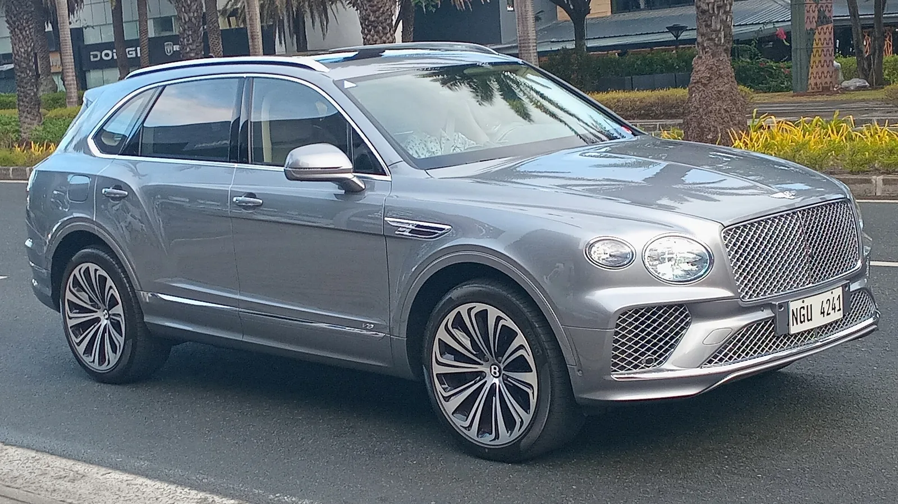

▲ 벤테이가는 2015년 출시 이후 벤틀리 판매의 중심이 됐다 ⓒ Wikimedia Commons
벤틀리 하면 컨티넨탈 GT를 떠올립니다.
그런데 벤틀리를 먹여 살리는 차는 SUV입니다. 벤테이가입니다.
국내 가격은 2026년형 V8 Speed가 3억 3,300만 원입니다. 650PS를 내고 복합연비는 6.6km/L입니다.
1. 가격표
| 연식 | 트림 | 가격 | 출력 |
|---|---|---|---|
| 2026년형 | V8 Speed | 3억 3,300만 원 | 650PS / 86.7kgf·m |
| 2025년형 | V8 아틀리에 에디션 | 3억 800만 원 | 550PS / 78.5kgf·m |
| V8 아틀리에 EWB | 3억 3,500만 원 | 550PS / 78.5kgf·m | |
| 2024년형 | V8 베이스 | 2억 6,350만 원 | 550PS / 78.5kgf·m |
| V8 S | 3억 750만 원 | ||
| V8 아주르 | 3억 1,760만 원 | ||
| V8 S 블랙 에디션 | 3억 4,680만 원 |
2026년형 V8 Speed가 100PS를 더 냅니다. 550PS에서 650PS로 올랐습니다.
대신 연비는 7.0km/L에서 6.6km/L로 내려갔습니다.
2. EWB라는 표기
2025년형 목록에 EWB가 있습니다. Extended Wheel Base, 롱휠베이스 사양입니다.
| 구분 | 가격 | 차이 |
|---|---|---|
| V8 아틀리에 에디션 | 3억 800만 원 | 기준 |
| V8 아틀리에 EWB | 3억 3,500만 원 | +2,700만 원 |
2,700만 원을 더 내고 얻는 것은 뒷좌석 공간입니다. 초고가 SUV에서 롱휠베이스 수요가 뚜렷한 이유는 뒷좌석에 사람이 앉기 때문입니다.
이 구도는 앞서 다룬 BMW 노이에 클라세 iX3의 중국 전용 롱휠베이스와 같은 논리입니다. 운전자가 아니라 승객을 위한 차라면 휠베이스가 상품성이 됩니다.

▲ EWB는 표준형보다 2,700만 원 비싸다 — 값은 뒷좌석 공간이다
3. 왜 SUV가 벤틀리를 먹여 살리나
벤테이가는 2015년에 나왔습니다. 벤틀리 역사상 첫 SUV입니다.
| 요인 | 내용 |
|---|---|
| 실용성 | 쿠페·세단보다 매일 탈 수 있다 |
| 시야 | 높은 착좌 — 럭셔리 구매층이 선호 |
| 신규 고객 | 기존 벤틀리 구매층이 아니던 층을 끌어온다 |
| 수익 | SUV는 대당 마진이 크다 |
같은 판단을 롤스로이스(컬리넌), 람보르기니(우루스), 애스턴마틴(DBX), 페라리(푸로산게)가 모두 내렸습니다. 벤테이가가 그 시작이었습니다.
결과는 명확했습니다. 이들 브랜드에서 SUV는 대부분 판매 1위 모델이 됐습니다.

▲ 벤테이가 실내. 다이아몬드 퀼팅 가죽과 우드 베니어가 가격의 상당 부분을 차지한다 ⓒ Wikimedia Commons
4. 유지비라는 변수
| 항목 | 내용 |
|---|---|
| 자동차세 | 4.0L V8 — 배기량 기준으로 연간 세액이 크다 |
| 유류비 | 복합 6.6~7.0km/L — 고급유 사용 |
| 보험 | 차량가 3억 원대 — 자차보험료가 높다 |
| 정비 | 부품·공임 모두 초고가 |
| 취득 시 | 개별소비세·교육세·부가세 + 취득세 7% |
취득세만 3억 3,300만 원 기준 약 2,331만 원입니다. 여기에 공채 매입과 등록비가 더해집니다.
다만 이 가격대에서 유지비는 구매 판단의 핵심 변수가 아닙니다. 앞서 다룬 타호가 세금과 연비 때문에 어려웠던 것과 대비됩니다. 같은 부담도 가격대에 따라 의미가 달라집니다.
5. 벤틀리의 다음 단계
벤틀리는 전동화 전환을 준비하고 있습니다. 본지는 8월 7일 벤틀리가 첫 전기차에 넣은 것이 배터리가 아니라 "심리 상담사"였다는 소식을 전한 바 있습니다.
| 구분 | 모델 |
|---|---|
| SUV | 벤테이가 — 볼륨 모델 |
| 그랜드 투어러 | 컨티넨탈 GT / GTC |
| 세단 | 플라잉 스퍼 |
본지가 다뤄온 벤틀리 기사 대부분은 컨티넨탈과 전동화 소재였습니다. 정작 판매의 중심인 벤테이가는 비어 있었습니다.

▲ 롤스로이스 컬리넌, 람보르기니 우루스, 페라리 푸로산게가 뒤를 따랐다

▲ 본지가 다뤄온 벤틀리 기사는 대부분 컨티넨탈과 전동화 소재였다
6. 정리
벤틀리 벤테이가의 국내 가격은 2026년형 V8 Speed가 3억 3,300만 원입니다. 4.0L 트윈터보 V8로 650PS / 86.7kgf·m를 내고 복합연비는 6.6km/L입니다.
2025년형 V8 아틀리에 에디션은 3억 800만 원(550PS), 롱휠베이스인 EWB는 3억 3,500만 원입니다. 2024년형 V8 베이스는 2억 6,350만 원이었습니다.
벤테이가는 2015년 벤틀리 최초의 SUV로 나와 브랜드 판매의 중심이 됐습니다. 이후 롤스로이스 컬리넌, 람보르기니 우루스, 애스턴마틴 DBX, 페라리 푸로산게가 같은 길을 따랐습니다.